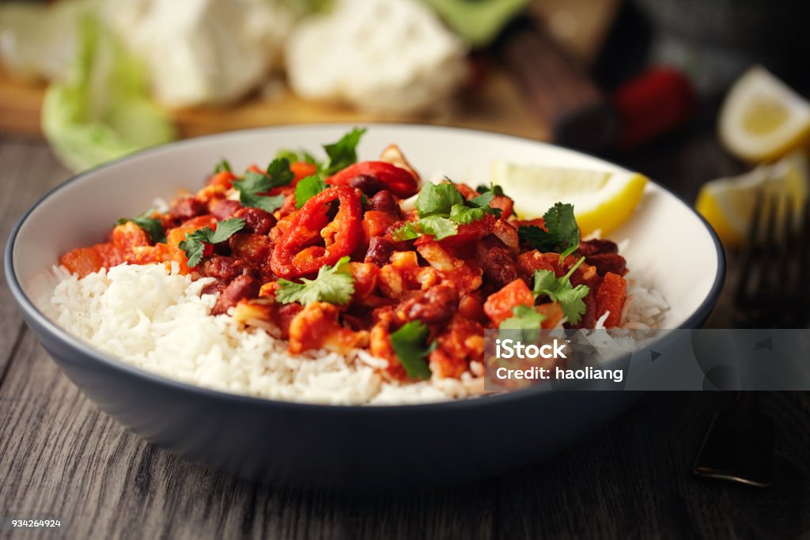

Howard's Home Chili

Description
This is my own special recipe, developed over time as a modification of my mother's. It's very heavily tomato based, and uses some vegetarian meat alternatives so it's perfect for most family gatherings! As a note of import though, it's meant to be heavily seasoned, though I don't provide the exact amounts. It goes great over anything lightly seasoned, such as plain rice or lightly salted mashed potatoes!
Ingredients
- 1 can Unsalted Crushed Tomatoes (28oz)
- 1 can Petite Diced Tomatoes (28oz)
- 1 Yellow Onion, chopped
- 1 Green Pepper, chopped
- 1 Bag Morningstar Grillers Crumbles (12 oz)
- 1 Clove Garlic, minced
- 1 tbsp Tomato Paste
- Cooking oil, ideally Vegetable Oil or Olive Oil
- Cumin
- Chili Powder
- Garlic Powder
- Onion Powder
- Salt
Steps
- In a medium-large crockpot or medium stovetop pot, cook onions and peppers in some oil on medium-low heat until onions begin to sweat
- Add Morningstar Crumbles. Cook until crumbles begin to turn crispy, oil as needed.
- When crumbles are crispy, add both cans of tomatoes, garlic, and tomato paste. Add some salt to aid in cooking. Simmer on medium heat.
- Stir occasionally anytime the liquids separate to the surface, and let it simmer for at least 20min before adding seasonings.
- Add two parts Cumin, two parts Chili Powder, one part Garlic Powder, one part Onion Powder, and Salt to taste. This recipe works best strongly seasoned, but if your cousin always brings mashed potatoes with lots of garlic and cheddar, you might want to tone this back a little. The proportions matter most.
- Once done, keep on low heat while serving if possible.